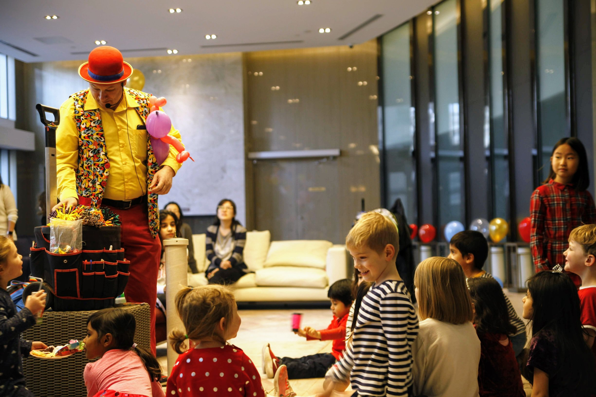

캐나다에서 생일 파티
많은 준비가 필요했던 엄청난(?) 생일 파티 였다. ㅎㅎ
장소 물색
다행히 살고 있는 콘도에서 큰 파티 룸이 있어 어렵지 않게 구할 수 있었다. 가격은 100불 정도 밖에 안하는데 크기는 반대편에서 소리를 질러도 들리지 않을 만큼 넓어서 어찌나 좋았던지 온 손님 모두 장소가 너무 마음에 들었다고 해서 좋았다.
룹백 (답례품)
캐나다에서는 생일 파티 관련하여 룰이 있다. 바로, 선물과 답례품이다. 나같은 귀차니스트에게는 재앙과도 같은 것인데 모두 하는거라 반항도 못하고 준비했다. 근데, 말이 쉽지 오기로 한 아이들의 수가 30명을 넘어가니 생일 파티 전날까지 준비/포장/보관하는데 집의 모든 인력과 집의 남는 공간을 룹백에 준비에 온전히 쏟아부었다.
명단 정리와 알림
우리 꼬맹이가 자기반 친구에게 엄마 아빠의 동의 없이 (동의가 뭔지 모름) 떠들고 다녀서 하게 된 파티라 반 아이가 메인 손님이다. 그런데 캐나다에서는 함부로 개인정보를 얻을 수가 없다. 이런 경우 정중히 학교에 리스트를 요청해서 연락처(이메일)를 받아야 한다. 일단 명단을 받고 나면, 생일 파티 전용 앱인가 사이트가 있는데 그걸로 생일 파티 이벤트 만들고 연락처를 등록한 다음 보내면 된다.
더불어 엄청난 인맥을 자랑하는 마눌님께서 자기 지인 애들도 다 불러재끼면서 인원은 점점 나 학교 다닐때 학급인원까지 올라갔다. (물론 다오지는 않았다. ㅎㅎㅎ)
파티 진행자
이 많은 인원을 첫째 아이와 몇 한국 아이 도움으로 해결해보겠단 발칙한 생각은 1주일만에 접고, 파티 진행자를 구하기로 했다. 종류도 많고, 컨택할 곳도 많았으나, 결국 풍선 할아버지 불러서 해결! ㅋㅋ 애들 모아 놓구 재미있게 얘기하면서 한 명씩 풍선을 만들어주었는데 애들이 참 좋아했다. 다만, 할배 체력의 급격한 저하로 30분 이후부터는 그냥 풍선만 만들어주고선 떠났다. ㅋ

파티 음식
캐나다에서 정말 정말 주의해야 하는것 중에 하나가 음식이다. 알러지 있는 애들이 어쩜 이리도 많은지~ ㅎㅎ 일단, 유치원생(6세 이하)이 참석하는 행사이면 무조건 넛프리로 준비해야 한다. 그리고 각 아이들의 건강 상태 또한 파티전에 체크해 두어야한다. 다음으로 베지테리언의 존재도 신경 써야한다. 애들이 뭔 채식주의자냐 하겠지만, 독한(?) 부모일 경우 꼬꼬마 때부터 엄청나게 교육을 시킨다. 그래서 음식은 넛프리로만 준비하되, 채식주의자를 위한 먹을거리도 디폴트로 있어야 한다.

결론
쓴 비용은 약1,000CAD정도 되며, 준비 기간은 약 3주, 개고생은 덤이다. 하는 것을 말리지 않으나 추천은 못하겠다. 참말로 힘들었다. ㅎ 가능하면 아이에게 미리 입막음(?)을 하고 저 돈으로 근사한 선물을 주는 것도 방법이 될거다. ㅋ
그리고, 이건 여담인데 미국은 멜팅팟 문화라고 하고 캐나다는 모자이크 컬쳐라고 보통 말한다. 파티에 참석한 어른들의 행동을 보고 있으면 자연스레 깨닫게 된다. ㅋ 애들말고 어른들 말이다…. ㅎㅎㅎㅎ